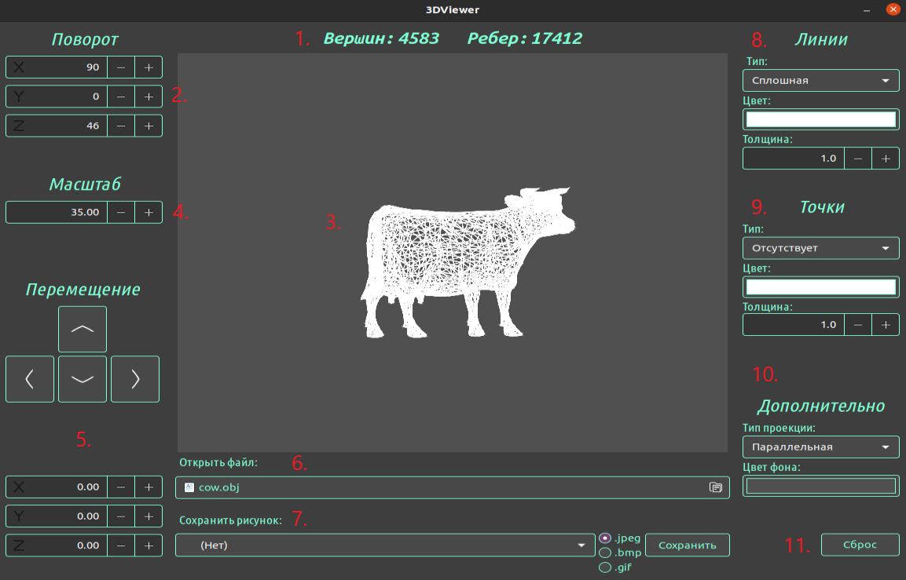

3DViewer v1.0
Описание программы
3DViewer — это программа, разработанная для просмотра трехмерных объектов
в пространстве, имея возможность менять цвет, тип проекции, положение и
поворот по осям. Также реализована возможность сохранять изначальный
объект в виде 2D-изображения в форматах .jpeg и .bmp.
Описание доступных функций
Пример отрисовки объекта в данной программе:

- Количество вершин и ребер в выбранном объекте
- 3D-изображение объекта
- Управление поворотом объекта по осям XYZ
- Изменение масштаба изображения
- Перемещение объекта по осям XYZ
- Меню выбора файла
- Меню сохранения изображения в выбранном формате
-
Изменение типа, толщины и цвета линий, которыми "отрендерен" объект
-
Изменение типа, толщины и цвета точек, которыми "отрендерен" объект
-
Дополнительные параметры, включающие в себя изменение типа проекции и
цвета фона
-
Сброс всех настроек на первоначальные.